Centuries ago, it was discovered that certain types of mineral rock possessed unusual properties of attraction to the metal iron. One particular mineral, called lodestone, or magnetite, is found mentioned in very old historical records (about 2500 years ago in Europe, and much earlier in the Far East) as a subject of curiosity. Later, it was employed in the aid of navigation, as it was found that a piece of this unusual rock would tend to orient itself in a north-south direction if left free to rotate (suspended on a string or on a float in water). A scientific study undertaken in 1269 by Peter Peregrinus revealed that steel could be similarly "charged" with this unusual property after being rubbed against one of the "poles" of a piece of lodestone.
Unlike electric charges (such as those observed when amber is rubbed against cloth), magnetic objects possessed two poles of opposite effect, denoted "north" and "south" after their self-orientation to the earth. As Peregrinus found, it was impossible to isolate one of these poles by itself by cutting a piece of lodestone in half: each resulting piece possessed its own pair of poles:
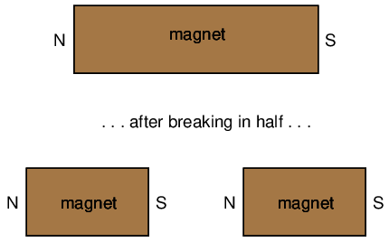
Like electric charges, there were only two types of poles to be found: north and south (by analogy, positive and negative). Just as with electric charges, same poles repel one another, while opposite poles attract. This force, like that caused by static electricity, extended itself invisibly over space, and could even pass through objects such as paper and wood with little effect upon strength.
The philosopher-scientist Rene Descartes noted that this invisible "field" could be mapped by placing a magnet underneath a flat piece of cloth or wood and sprinkling iron filings on top. The filings will align themselves with the magnetic field, "mapping" its shape. The result shows how the field continues unbroken from one pole of a magnet to the other:
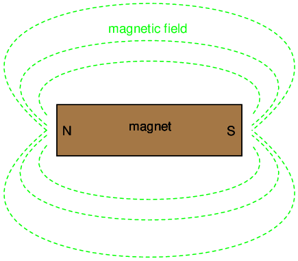
As with any kind of field (electric, magnetic, gravitational), the total quantity, or effect, of the field is referred to as a flux, while the "push" causing the flux to form in space is called a force. Michael Faraday coined the term "tube" to refer to a string of magnetic flux in space (the term "line" is more commonly used now). Indeed, the measurement of magnetic field flux is often defined in terms of the number of flux lines, although it is doubtful that such fields exist in individual, discrete lines of constant value.
Modern theories of magnetism maintain that a magnetic field is produced by an electric charge in motion, and thus it is theorized that the magnetic field of a so-called "permanent" magnets such as lodestone is the result of electrons within the atoms of iron spinning uniformly in the same direction. Whether or not the electrons in a material's atoms are subject to this kind of uniform spinning is dictated by the atomic structure of the material (not unlike how electrical conductivity is dictated by the electron binding in a material's atoms). Thus, only certain types of substances react with magnetic fields, and even fewer have the ability to permanently sustain a magnetic field.
Iron is one of those types of substances that readily magnetizes. If a piece of iron is brought near a permanent magnet, the electrons within the atoms in the iron orient their spins to match the magnetic field force produced by the permanent magnet, and the iron becomes "magnetized." The iron will magnetize in such a way as to incorporate the magnetic flux lines into its shape, which attracts it toward the permanent magnet, no matter which pole of the permanent magnet is offered to the iron:
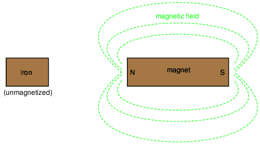
The previously unmagnetized iron becomes magnetized as it is brought closer to the permanent magnet. No matter what pole of the permanent magnet is extended toward the iron, the iron will magnetize in such a way as to be attracted toward the magnet:
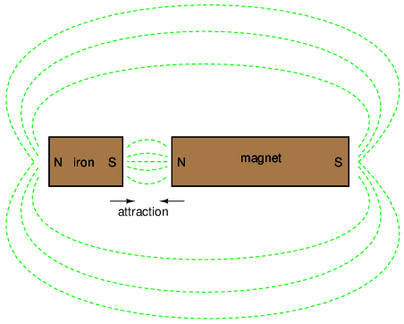
Referencing the natural magnetic properties of iron (Latin = "ferrum"), a ferromagnetic material is one that readily magnetizes (its constituent atoms easily orient their electron spins to conform to an external magnetic field force). All materials are magnetic to some degree, and those that are not considered ferromagnetic (easily magnetized) are classified as either paramagnetic (slightly magnetic) or diamagnetic (tend to exclude magnetic fields). Of the two, diamagnetic materials are the strangest. In the presence of an external magnetic field, they actually become slightly magnetized in the opposite direction, so as to repel the external field!
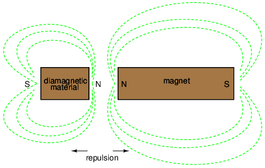
If a ferromagnetic material tends to retain its magnetization after an external field is removed, it is said to have good retentivity. This, of course, is a necessary quality for a permanent magnet.
The discovery of the relationship between magnetism and electricity was, like so many other scientific discoveries, stumbled upon almost by accident. The Danish physicist Hans Christian Oersted was lecturing one day in 1820 on the possibility of electricity and magnetism being related to one another, and in the process demonstrated it conclusively by experiment in front of his whole class! By passing an electric current through a metal wire suspended above a magnetic compass, Oersted was able to produce a definite motion of the compass needle in response to the current. What began as conjecture at the start of the class session was confirmed as fact at the end. Needless to say, Oersted had to revise his lecture notes for future classes! His serendipitous discovery paved the way for a whole new branch of science: electromagnetics.
Detailed experiments showed that the magnetic field produced by an electric current is always oriented perpendicular to the direction of flow. A simple method of showing this relationship is called the left-hand rule. Simply stated, the left-hand rule says that the magnetic flux lines produced by a current-carrying wire will be oriented the same direction as the curled fingers of a person's left hand (in the "hitchhiking" position), with the thumb pointing in the direction of electron flow:
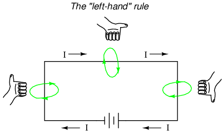
The magnetic field encircles this straight piece of current-carrying wire, the magnetic flux lines having no definite "north" or "south' poles.
While the magnetic field surrounding a current-carrying wire is indeed interesting, it is quite weak for common amounts of current, able to deflect a compass needle and not much more. To create a stronger magnetic field force (and consequently, more field flux) with the same amount of electric current, we can wrap the wire into a coil shape, where the circling magnetic fields around the wire will join to create a larger field with a definite magnetic (north and south) polarity:
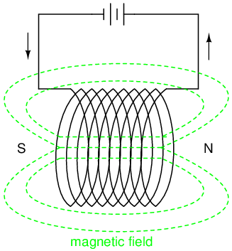
The amount of magnetic field force generated by a coiled wire is proportional to the current through the wire multiplied by the number of "turns" or "wraps" of wire in the coil. This field force is called magnetomotive force (mmf), and is very much analogous to electromotive force (E) in an electric circuit.
An electromagnet is a piece of wire intended to generate a magnetic field with the passage of electric current through it. Though all current-carrying conductors produce magnetic fields, an electromagnet is usually constructed in such a way as to maximize the strength of the magnetic field it produces for a special purpose. Electromagnets find frequent application in research, industry, medical, and consumer products.
As an electrically-controllable magnet, electromagnets find application in a wide variety of "electromechanical" devices: machines that effect mechanical force or motion through electrical power. Perhaps the most obvious example of such a machine is the electric motor.
Another example is the relay, an electrically-controlled switch. If a switch contact mechanism is built so that it can be actuated (opened and closed) by the application of a magnetic field, and an electromagnet coil is placed in the near vicinity to produce that requisite field, it will be possible to open and close the switch by the application of a current through the coil. In effect, this gives us a device that enables elelctricity to control electricity:
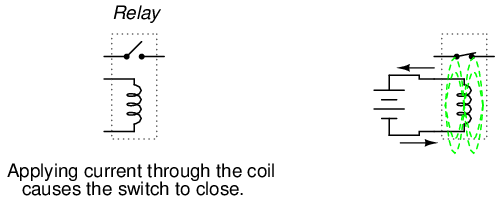
Relays can be constructed to actuate multiple switch contacts, or operate them in "reverse" (energizing the coil will open the switch contact, and unpowering the coil will allow it to spring closed again).
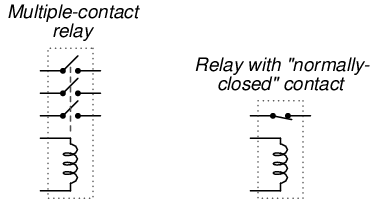
If the burden of two systems of measurement for common quantities (English vs. metric) throws your mind into confusion, this is not the place for you! Due to an early lack of standardization in the science of magnetism, we have been plagued with no less than three complete systems of measurement for magnetic quantities.
First, we need to become acquainted with the various quantities associated with magnetism. There are quite a few more quantities to be dealt with in magnetic systems than for electrical systems. With electricity, the basic quantities are Voltage (E), Current (I), Resistance (R), and Power (P). The first three are related to one another by Ohm's Law (E=IR ; I=E/R ; R=E/I), while Power is related to voltage, current, and resistance by Joule's Law (P=IE ; P=I2R ; P=E2/R).
With magnetism, we have the following quantities to deal with:
Magnetomotive Force -- The quantity of magnetic field force, or "push." Analogous to electric voltage (electromotive force).
Field Flux -- The quantity of total field effect, or "substance" of the field. Analogous to electric current.
Field Intensity -- The amount of field force (mmf) distributed over the length of the electromagnet. Sometimes referred to as Magnetizing Force.
Flux Density -- The amount of magnetic field flux concentrated in a given area.
Reluctance -- The opposition to magnetic field flux through a given volume of space or material. Analogous to electrical resistance.
Permeability -- The specific measure of a material's acceptance of magnetic flux, analogous to the specific resistance of a conductive material (ρ), except inverse (greater permeability means easier passage of magnetic flux, whereas greater specific resistance means more difficult passage of electric current).
But wait . . . the fun is just beginning! Not only do we have more quantities to keep track of with magnetism than with electricity, but we have several different systems of unit measurement for each of these quantities. As with common quantities of length, weight, volume, and temperature, we have both English and metric systems. However, there is actually more than one metric system of units, and multiple metric systems are used in magnetic field measurements! One is called the cgs, which stands for Centimeter-Gram-Second, denoting the root measures upon which the whole system is based. The other was originally known as the mks system, which stood for Meter-Kilogram-Second, which was later revised into another system, called rmks, standing for Rationalized Meter-Kilogram-Second. This ended up being adopted as an international standard and renamed SI (Systeme International).
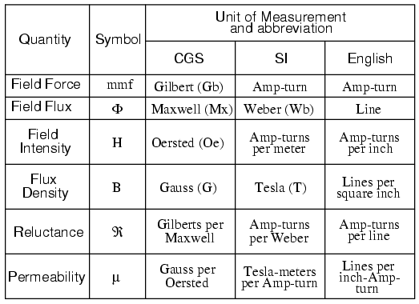
And yes, the µ symbol is really the same as the metric prefix "micro." I find this especially confusing, using the exact same alphabetical character to symbolize both a specific quantity and a general metric prefix!
As you might have guessed already, the relationship between field force, field flux, and reluctance is much the same as that between the electrical quantities of electromotive force (E), current (I), and resistance (R). This provides something akin to an Ohm's Law for magnetic circuits:
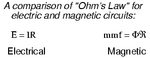
And, given that permeability is inversely analogous to specific resistance, the equation for finding the reluctance of a magnetic material is very similar to that for finding the resistance of a conductor:
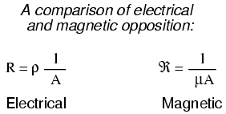
In either case, a longer piece of material provides a greater opposition, all other factors being equal. Also, a larger cross-sectional area makes for less opposition, all other factors being equal.
The major caveat here is that the reluctance of a material to magnetic flux actually changes with the concentration of flux going through it. This makes the "Ohm's Law" for magnetic circuits nonlinear and far more difficult to work with than the electrical version of Ohm's Law. It would be analogous to having a resistor that changed resistance as the current through it varied (a circuit composed of varistors instead of resistors).
The nonlinearity of material permeability may be graphed for better understanding. We'll place the quantity of field intensity (H), equal to field force (mmf) divided by the length of the material, on the horizontal axis of the graph. On the vertical axis, we'll place the quantity of flux density (B), equal to total flux divided by the cross-sectional area of the material. We will use the quantities of field intensity (H) and flux density (B) instead of field force (mmf) and total flux (Φ) so that the shape of our graph remains independent of the physical dimensions of our test material. What we're trying to do here is show a mathematical relationship between field force and flux for any chunk of a particular substance, in the same spirit as describing a material's specific resistance in ohm-cmil/ft instead of its actual resistance in ohms.
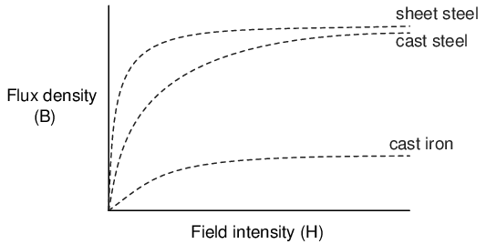
This is called the normal magnetization curve, or B-H curve, for any particular material. Notice how the flux density for any of the above materials (cast iron, cast steel, and sheet steel) levels off with increasing amounts of field intensity. This effect is known as saturation. When there is little applied magnetic force (low H), only a few atoms are in alignment, and the rest are easily aligned with additional force. However, as more flux gets crammed into the same cross-sectional area of a ferromagnetic material, fewer atoms are available within that material to align their electrons with additional force, and so it takes more and more force (H) to get less and less "help" from the material in creating more flux density (B). To put this in economic terms, we're seeing a case of diminishing returns (B) on our investment (H). Saturation is a phenomenon limited to iron-core electromagnets. Air-core electromagnets don't saturate, but on the other hand they don't produce nearly as much magnetic flux as a ferromagnetic core for the same number of wire turns and current.
Another quirk to confound our analysis of magnetic flux versus force is the phenomenon of magnetic hysteresis. As a general term, hysteresis means a lag between input and output in a system upon a change in direction. Anyone who's ever driven an old automobile with "loose" steering knows what hysteresis is: to change from turning left to turning right (or vice versa), you have to rotate the steering wheel an additional amount to overcome the built-in "lag" in the mechanical linkage system between the steering wheel and the front wheels of the car. In a magnetic system, hysteresis is seen in a ferromagnetic material that tends to stay magnetized after an applied field force has been removed (see "retentivity" in the first section of this chapter), if the force is reversed in polarity.
Let's use the same graph again, only extending the axes to indicate both positive and negative quantities. First we'll apply an increasing field force (current through the coils of our electromagnet). We should see the flux density increase (go up and to the right) according to the normal magnetization curve:
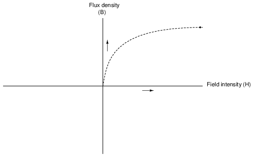
Next, we'll stop the current going through the coil of the electromagnet and see what happens to the flux, leaving the first curve still on the graph:
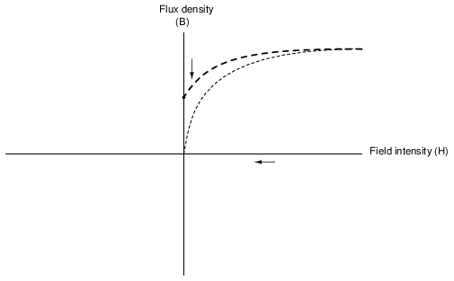
Due to the retentivity of the material, we still have a magnetic flux with no applied force (no current through the coil). Our electromagnet core is acting as a permanent magnet at this point. Now we will slowly apply the same amount of magnetic field force in the opposite direction to our sample:
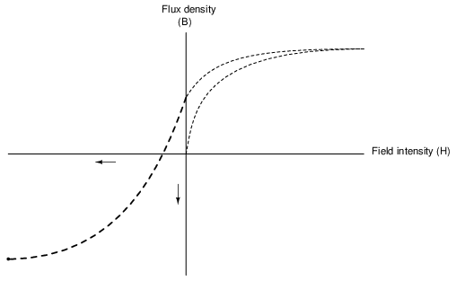
The flux density has now reached a point equivalent to what it was with a full positive value of field intensity (H), except in the negative, or opposite, direction. Let's stop the current going through the coil again and see how much flux remains:
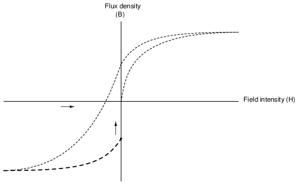
Once again, due to the natural retentivity of the material, it will hold a magnetic flux with no power applied to the coil, except this time its in a direction opposite to that of the last time we stopped current through the coil. If we re-apply power in a positive direction again, we should see the flux density reach its prior peak in the upper-right corner of the graph again:
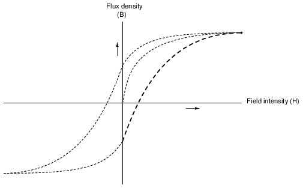
The "S"-shaped curve traced by these steps form what is called the hysteresis curve of a ferromagnetic material for a given set of field intensity extremes (-H and +H). If this doesn't quite make sense, consider a hysteresis graph for the automobile steering scenario described earlier, one graph depicting a "tight" steering system and one depicting a "loose" system:
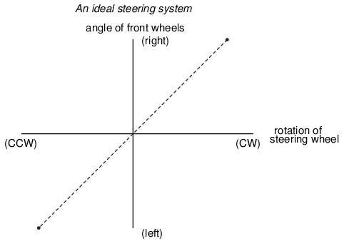
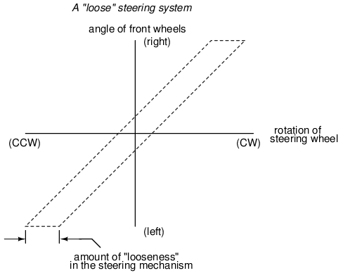
Just as in the case of automobile steering systems, hysteresis can be a problem. If you're designing a system to produce precise amounts of magnetic field flux for given amounts of current, hysteresis may hinder this design goal (due to the fact that the amount of flux density would depend on the current and how strongly it was magnetized before!). Similarly, a loose steering system is unacceptable in a race car, where precise, repeatable steering response is a necessity. Also, having to overcome prior magnetization in an electromagnet can be a waste of energy if the current used to energize the coil is alternating back and forth (AC). The area within the hysteresis curve gives a rough estimate of the amount of this wasted energy.
Other times, magnetic hysteresis is a desirable thing. Such is the case when magnetic materials are used as a means of storing information (computer disks, audio and video tapes). In these applications, it is desirable to be able to magnetize a speck of iron oxide (ferrite) and rely on that material's retentivity to "remember" its last magnetized state. Another productive application for magnetic hysteresis is in filtering high-frequency electromagnetic "noise" (rapidly alternating surges of voltage) from signal wiring by running those wires through the middle of a ferrite ring. The energy consumed in overcoming the hysteresis of ferrite attenuates the strength of the "noise" signal. Interestingly enough, the hysteresis curve of ferrite is quite extreme:
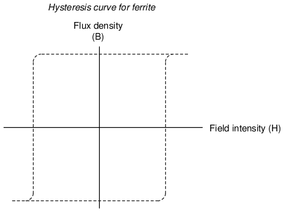
While Oersted's surprising discovery of electromagnetism paved the way for more practical applications of electricity, it was Michael Faraday who gave us the key to the practical generation of electricity: electromagnetic induction. Faraday discovered that a voltage would be generated across a length of wire if that wire was exposed to a perpendicular magnetic field flux of changing intensity.
An easy way to create a magnetic field of changing intensity is to move a permanent magnet next to a wire or coil of wire. Remember: the magnetic field must increase or decrease in intensity perpendicular to the wire (so that the lines of flux "cut across" the conductor), or else no voltage will be induced:
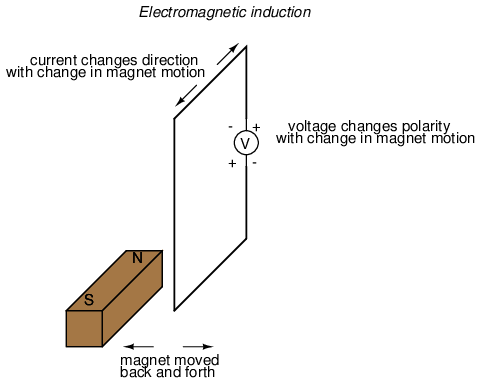
Faraday was able to mathematically relate the rate of change of the magnetic field flux with induced voltage (note the use of a lower-case letter "e" for voltage. This refers to instantaneous voltage, or voltage at a specific point in time, rather than a steady, stable voltage.):
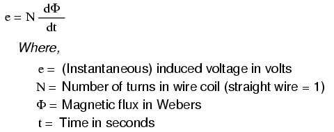
The "d" terms are standard calculus notation, representing rate-of-change of flux over time. "N" stands for the number of turns, or wraps, in the wire coil (assuming that the wire is formed in the shape of a coil for maximum electromagnetic efficiency).
This phenomenon is put into obvious practical use in the construction of electrical generators, which use mechanical power to move a magnetic field past coils of wire to generate voltage. However, this is by no means the only practical use for this principle.
If we recall that the magnetic field produced by a current-carrying wire was always perpendicular to that wire, and that the flux intensity of that magnetic field varied with the amount of current through it, we can see that a wire is capable of inducing a voltage along its own length simply due to a change in current through it. This effect is called self-induction: a changing magnetic field produced by changes in current through a wire inducing voltage along the length of that same wire. If the magnetic field flux is enhanced by bending the wire into the shape of a coil, and/or wrapping that coil around a material of high permeability, this effect of self-induced voltage will be more intense. A device constructed to take advantage of this effect is called an inductor, and will be discussed in greater detail in the next chapter.
If two coils of wire are brought into close proximity with each other so the magnetic field from one links with the other, a voltage will be generated in the second coil as a result. This is called mutual inductance: when voltage impressed upon one coil induces a voltage in another.
A device specifically designed to produce the effect of mutual inductance between two or more coils is called a transformer.
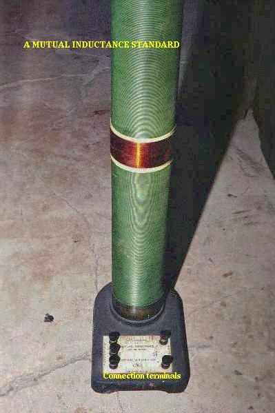
The device shown in the above photograph is a kind of transformer, with two concentric wire coils. It is actually intended as a precision standard unit for mutual inductance, but for the purposes of illustrating what the essence of a transformer is, it will suffice. The two wire coils can be distinguished from each other by color: the bulk of the tube's length is wrapped in green-insulated wire (the first coil) while the second coil (wire with bronze-colored insulation) stands in the middle of the tube's length. The wire ends run down to connection terminals at the bottom of the unit. Most transformer units are not built with their wire coils exposed like this.
Because magnetically-induced voltage only happens when the magnetic field flux is changing in strength relative to the wire, mutual inductance between two coils can only happen with alternating (changing -- AC) voltage, and not with direct (steady -- DC) voltage. The only applications for mutual inductance in a DC system is where some means is available to switch power on and off to the coil (thus creating a pulsing DC voltage), the induced voltage peaking at every pulse.
A very useful property of transformers is the ability to transform voltage and current levels according to a simple ratio, determined by the ratio of input and output coil turns. If the energized coil of a transformer is energized by an AC voltage, the amount of AC voltage induced in the unpowered coil will be equal to the input voltage multiplied by the ratio of output to input wire turns in the coils. Conversely, the current through the windings of the output coil compared to the input coil will follow the opposite ratio: if the voltage is increased from input coil to output coil, the current will be decreased by the same proportion. This action of the transformer is analogous to that of mechanical gear, belt sheave, or chain sprocket ratios:
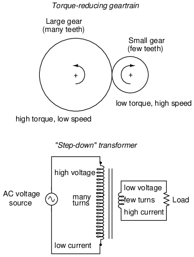
A transformer designed to output more voltage than it takes in across the input coil is called a "step-up" transformer, while one designed to do the opposite is called a "step-down," in reference to the transformation of voltage that takes place. The current through each respective coil, of course, follows the exact opposite proportion.
Contributors to this chapter are listed in chronological order of their contributions, from most recent to first. See Appendix 2 (Contributor List) for dates and contact information.
Jason Starck (June 2000): HTML document formatting, which led to a much better-looking second edition.
Lessons In Electric Circuits copyright (C) 2000-2023 Tony R. Kuphaldt, under the terms and conditions of the CC BY License.